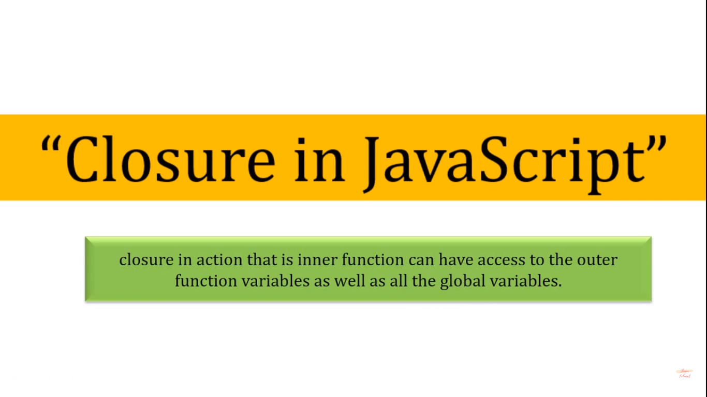
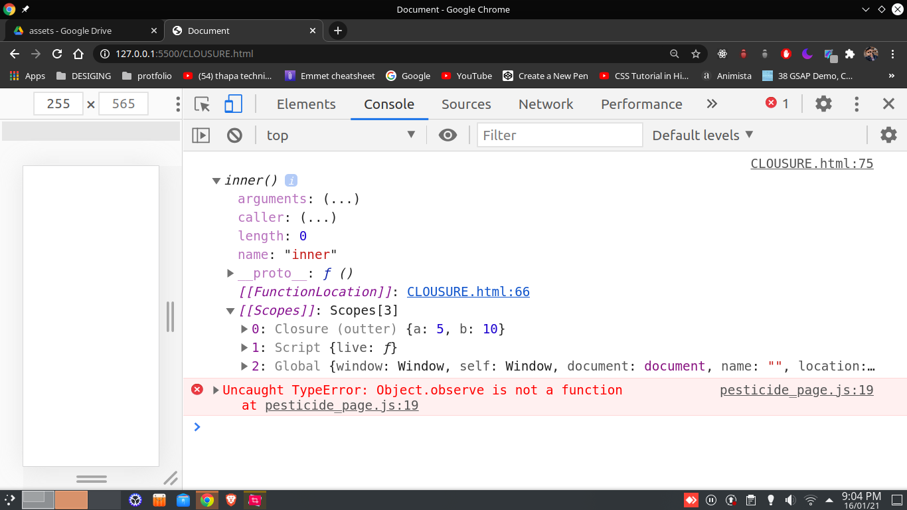

outter fn call kr a stack se nikal k baad b hum inner function or use kr k a & b value use kr rahe a
which was some where in memory even after execution of outer(5) completed
this called clousre
baley e outer function nahi a to b inner k le a outer fn varibale / globAL B AVAILABLE
 